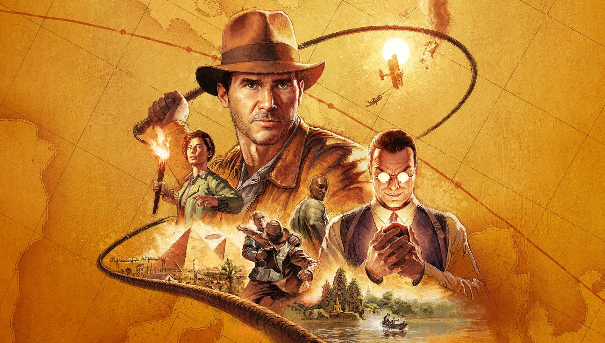

Indiana Jones: The Next Great Quest
Posted on: March 26, 2026

Indiana Jones: The Legendary Adventure that Defined
Treasure Hunting Movies
If adveture movies had a king, it would definitely be Indiana Jones.
From ancient tempels and hidden treasures to dangerous traps and legendary
artifacts, The story follows the fearless archaeologist Indiana Jones,
who travels across the world in search of mysterious relics while battling
powerfull enemies. With unforgettable actions scenes, icon music, and Harrison
Ford's legendary performance, Indiana Jones became one of the greatest adventure movie
franchises of all time. Whether it's the search of the Ark, the Holy Grail, or the
Dail of Destiny, every film brings a thrilling cinematic journey packed with mystery
and action.

Indiana Jones Game Trailer Hype: Release Date,
Adventure & Gameplay Features
The latest Indiana Jones and the Great Circle Trailer has Created massive
hype among adventure game fans. The cinematic trailer shows intense action,
ancient temples, secret puzzles, deadly traps, and Indy's iconic whip combat,
giving strong movie vibes. The game officially released on december 9, 2024
for PC and Xbox, wile PS5 launched on Aprile 17, 2025.
Talking about features, the game offers first-preson expolration, puzzle
solving, stealth action, whip mechanics, treasure hunting, and globe-trotting
missions across jungles, deserts, and cinematic trailer moments make it feel
like playing an actual Indiana jones movie.
Final Thoughts on Indiana Jones' Epic Adventure
- "with cinematic action, mind-bending puzzels, and classic
Indiana Jones adveture vibes, this games looks ready to
become one of the most unforgettable treasure-hunting
experiences for gamers.""
- “From whip-cracking combat to ancient mystery-filled ruins,
Indiana Jones promises an adventure that feels straight out
of a blockbuster movie.”
- “If the trailer is anything to go by,
this could easily be one of the most exciting
action-adventure releases for fans
of exploration and story-driven gameplay.”